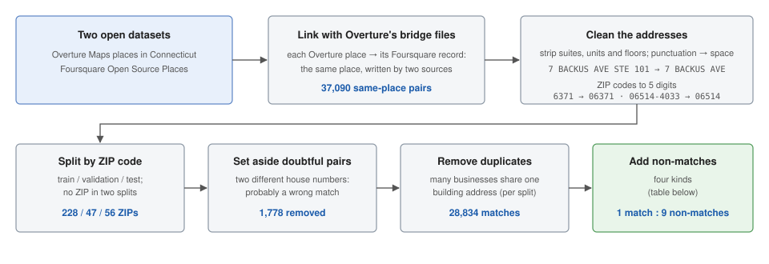
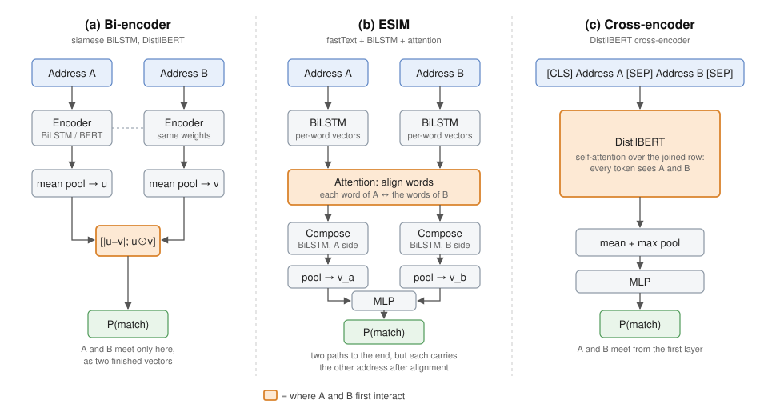

Comparing address-matching models on a unified dataset
There are many address-matching models, from string-similarity rules to deep learning, but each is evaluated on its own data, so they can’t be compared directly. This post runs seven of them on one shared dataset of real address pairs and reports where they differ.
The data
I used two open datasets, Overture Maps and Foursquare Open Source Places. Overture’s bridge files link each Overture place to its Foursquare record, which gives pairs of addresses for the same place written by two different sources (Connecticut only).

Then the negatives, the pairs that are not the same place. Random pairs are too easy, so I built several kinds:
| Pair type | Example | Same place? | Test pairs | Evaluated on |
|---|---|---|---|---|
| Positive, identical | 7 BACKUS AVE / 7 BACKUS AVE |
yes | 3,543 | yes |
| Positive, non-identical | 12 ELM ST / 12 ELM STREET |
yes | 843 | yes |
| Different number | 12 ELM ST / 14 ELM ST |
no | 14,379 | yes |
| Real look-alike street | 100 N MAIN ST / 100 S MAIN ST |
no | 15 | no (too few) |
| Look-alike street | 431 HALLETT ST / 431 HARRIET ST |
no | 1,053 | yes |
| Random | two random addresses | no | 24,019 | yes |
| Pair type | How it’s built |
|---|---|
| Positive, identical | An Overture place and its linked Foursquare record; the two addresses are identical after cleaning |
| Positive, non-identical | The same link, but the two addresses differ |
| Different number | Two places on the same street in the same ZIP; both addresses have a house number, and the numbers differ. At most 5 partners per place |
| Real look-alike street | Two real places in the same ZIP with the same house number and similar street names (Jaro-Winkler > 0.8), more than 500 m apart |
| Look-alike street | A real address with its street swapped for a different, similar-looking street from the same ZIP; house number kept. Generated because real look-alike pairs are too rare |
| Random | Two random addresses from the same split |
The two hard pair types are the non-identical matches and the look-alike streets; the models differ only on these.
The dataset has a 1:9 ratio of matches to non-matches. To avoid data leakage, each ZIP code belongs to only one of the train, validation and test splits.
The models
I compared two kinds of models.
Classical models get the address pre-chopped into pieces: house number, street and ZIP code. For each piece I compute string-similarity scores (Jaro-Winkler, Levenshtein, character-overlap measures and so on), plus a flag for pairs where one side has no house number: 23 features in total. When one side has no number, its house-number features are set to −1, meaning “not comparable”. I train logistic regression, a random forest and XGBoost on these features. XGBoost is the tree model used in the comparisons below.

Neural models get only the two raw strings and have to learn the rest:
- a siamese BiLSTM, which reads each address character by character, turns it into one vector, and compares the two vectors at the end;
- ESIM, which reads word by word (with fastText word vectors) and lets each word of one address attend to the words of the other partway through;
- DistilBERT as a bi-encoder, a pretrained transformer used like the siamese model: encode each address separately, compare at the end;
- DistilBERT as a cross-encoder, where both addresses go in as one input, so every token can attend to every token of the other address from the first layer.
Each neural model is trained with three seeds; the ranges below are the minimum and maximum over the three.

How I scored them
Two kinds of numbers:
- Per pair type at a 0.5 threshold: what share of true matches did the model find, and what share of each kind of non-match did it reject?
- AUC, which ignores the threshold. Take a random true (non-identical) match and a random look-alike street. What’s the chance the model gives the true match the higher score? 0.5 is a coin flip; 1.0 is perfect.
AUC is needed because two models can look different at 0.5 only because their scores are shifted, while ranking the pairs equally well.
Show as a table
| Model | AUC |
|---|---|
| XGBoost | 0.920 |
| DistilBERT cross-encoder | 0.888–0.904 |
| DistilBERT bi-encoder | 0.883–0.893 |
| Siamese BiLSTM | 0.878–0.893 |
| ESIM (fastText) | 0.861–0.890 |
What I found
1. All models handle the easy pairs. On identical matches, different-number pairs and random pairs, every model gets about 98–100% right. Overall accuracy would make the models look nearly identical.
2. Missing house numbers are where the models differ most. When one side of a true match has no house number (641 SCOFIELDTOWN RD / SCOFIELDTOWN RD), the tree models find 94–96% of these matches, more than of non-identical matches overall. The neural models find 63–76% of them, about 15 points below their overall rate:
Show as a table
| Model | All non-identical | Number on one side only |
|---|---|---|
| Random forest | 84.0% | 96.3% |
| XGBoost | 83.6% | 94.5% |
| Siamese BiLSTM | 87.0–89.3% | 69.5–75.6% |
| ESIM (fastText) | 87.3–90.3% | 71.3–75.6% |
| DistilBERT bi-encoder | 89.0–90.9% | 69.5–72.6% |
| DistilBERT cross-encoder | 80.3–83.0% | 63.4–66.5% |
The likely reason is that the classical models get the house number as its own field, marked “not comparable” when one side has none. Without that marking, the trees lose most of these matches: XGBoost with the missing number read as 0 finds 20% of them, against 94% with the −1 marking. The neural models see only a string with a number missing.
3. On look-alike streets the neural models are level with the trees. The chart splits the true matches by what happened to the house number, and shows how well each model ranks them above the look-alike streets:
Show as a table
| Group | n | XGBoost | Siamese BiLSTM | ESIM | Bi-encoder | Cross-encoder |
|---|---|---|---|---|---|---|
| Same house number on both sides | 638 | 0.919 | 0.914–0.921 | 0.898–0.917 | 0.927–0.934 | 0.908–0.928 |
| House number missing on one side | 164 | 0.962 | 0.730–0.810 | 0.699–0.790 | 0.692–0.724 | 0.775–0.804 |
| Two different house numbers | 41 | 0.774 | 0.904–0.945 | 0.835–0.871 | 0.964–0.973 | 0.916–0.937 |
- When both sides have the same house number, every model is at 0.90–0.93.
- When the house number is missing from one side, XGBoost is at 0.96 and the neural models at 0.69–0.81.
- The group with two different house numbers on a true match has only 41 pairs; here the neural models are ahead of XGBoost.
So the neural models aren’t worse at streets: setting the missing-number matches aside, every one of them ranks matches against look-alike streets about as well as XGBoost or better. XGBoost’s overall lead comes from the group of 164 pairs.
4. The 0.5 threshold is misleading on its own. The DistilBERT bi-encoder finds 89–91% of the non-identical matches but rejects only 58–69% of the look-alike streets. The cross-encoder is the opposite: 80–83% found, 86–89% rejected. Their AUCs overlap (0.883–0.893 and 0.888–0.904), so they rank the hard pairs about equally well. The difference is in how their scores are spread: the cross-encoder scores most pairs close to 0 or 1, so almost any threshold works for it, while the bi-encoder only separates matches from look-alike streets with a threshold near 0.99.
5. Cross-attention brought no clear gain in ranking. Two pairs of models differ mainly in whether the two addresses attend to each other: the cross-encoder against the bi-encoder, and ESIM against the siamese BiLSTM. In both pairs the AUCs overlap. The DistilBERT pair is the cleaner test, since ESIM also reads words where the siamese model reads characters.
ESIM and rare house numbers
ESIM, following the original paper, uses word2vec vectors, which only cover words seen at least twice. Every other word becomes one shared “unknown” token. When both house numbers of a same-street pair are seen only once, 2147 SUMMER ST / 1867 SUMMER ST becomes the same input as 2147 SUMMER ST / 2147 SUMMER ST, with the opposite label. Each training run picked one answer for the whole group.
Giving every word its own word2vec vector did not fix it: word2vec builds a number’s vector from the words around it, so two numbers on the same street end up with nearly the same vector. Two settings did fix it: fastText, which builds each word’s vector from its character pieces, and a fixed random vector for each rare word. I kept fastText, which ranks non-identical matches against look-alike streets better on validation. Characters (siamese) and sub-word pieces (DistilBERT) never had this problem.
Correction to an earlier version
An earlier version of this post and the paper had a data error. When building the different-number pairs, I checked that both places had a house number using their Overture addresses, but one side of the pair uses the Foursquare address, which sometimes leaves the number off. So about 2% of the different-number pairs looked like 74 BEACH RD / BEACH RD, the same pattern as some true matches, with the opposite label. I fixed the check, rebuilt the pairs and retrained every model; all numbers here come from the corrected data. The fix mainly changed the matches with a missing number, which every model now finds far more often. Appendix B of the paper describes the error and what it changed.
What I’d do next
- Give the neural models the house number separately, or at least a “number missing” signal, like the classical models have. That is where they fall behind.
- Test it in a retrieval setting: real geocoding ranks many candidates, not one fixed pair.
- Go beyond Connecticut.
Scoring by pair type is what showed this. A single overall number would say the trees beat the transformers; split by pair type, the neural models handle look-alike streets as well as the trees, and the gap is the missing-number pairs.
Everything is public
- Paper (PDF): address-matching-by-pair-type.pdf
- Code: github.com/DZhang3210/address-matching-by-pair-type, including a notebook that reproduces every table
- Trained models: huggingface.co/zhangdav/address-matching-by-pair-type
- Dataset: huggingface.co/datasets/zhangdav/address-matching-by-pair-type